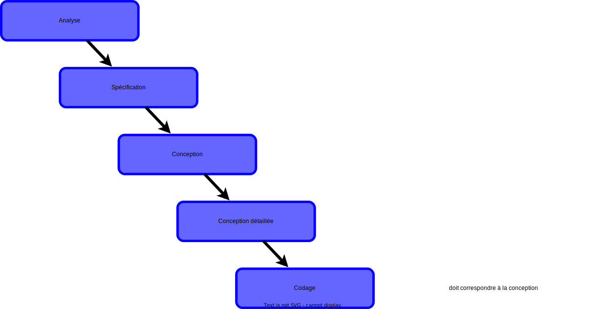
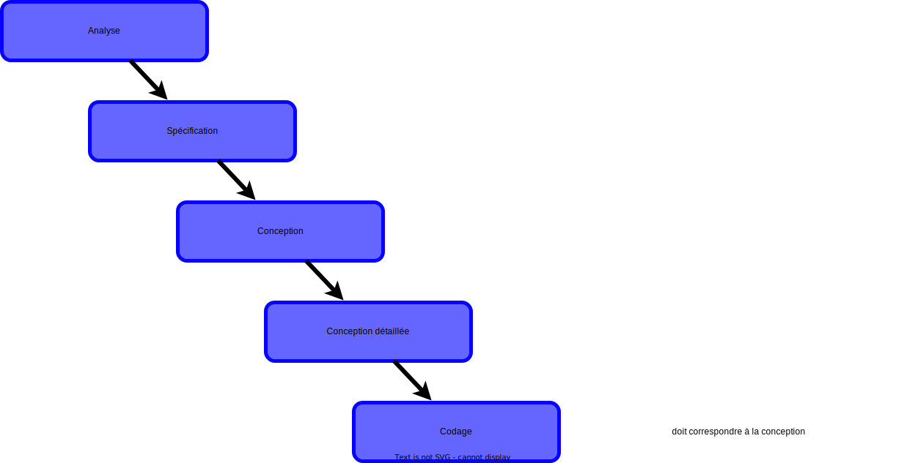
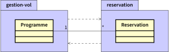
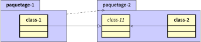

2A - Bachelor Universitaire de Technologie
IUT d'Orsay - Université Paris-Saclay - 2023/2024
IUT d'Orsay - Université Paris-Saclay - 2023/2024

Cycle de développement


 



Exemple d'introduction

Définitions
- Un paquetage regroupe des éléments de la modélisation appelés membres, portant sur un sous-ensemble du système.
-
Le découpage en paquetage doit traduire un découpage logique
du système correspondant à des espaces de nommage homogènes. -
Un paquetage permet de grouper n'importe quelle éléments d'UML
dans des unités de plus haut niveau.- classes, composants, cas d’utilisation, ..., et d’autres paquetages.
Présentation d'un paquetage

Nom d'un paquetage
-
Chaque paquetage doit avoir
un nom différent
(espace de nommage). -
Les éléments contenus dans un paquetage se distinguent
par leur appartenance au paquetage englobant.
- deux éléments dans deux paquetages peuvent porter le même nom.
- deux éléments dans le même paquetage doivent porter des noms différents.
Exemple
Nom d'un élément
-
Le nom d’un élément est dit simple s’il est utilisé seul.
- la classe
Roue
- la classe
-
Le nom d’un élément est dit complet s’il est précédé par les noms
des paquetages englobants (name space).- la classe
voiture::systeme-acceleration::Roue
- la classe
La visibilité
- Les éléments d’un paquetage peuvent avoir une visibilité déclarée:
- de type public (par défaut) : visible dans tout le modèle.
- de type privé (
private) : non visible à l'extérieur du paquetage.

Relation de dépendances
- Une relation de dépendance doit exister dès que
deux éléments issus
de deux paquetages sont associés.- hormis les cas de dépendances implicites (emboîtement de paquetages)
- C'est une relation unidirectionnelle entre paquetages.
- une modification de la cible peut impliquer une modification de la source
- Une relation de dépendance se représente par une flèche en pointillé.
Exemple

Importation de paquetage
- Pour simplifier l'utilisation des éléments contenus dans un autre
paquetage, on peut utiliser l'importation.- permet d’importer l’espace de nommage d’un autre paquetage.
-
Tous les membres d'un paquetage ont accès à tous les membres
du paquetage importé.- sans utiliser explicitement le nom du paquetage importé.
Exemple 1

Exemple 2

Le paquetage C a accès aux classes C1,C2 et C4.
Accès à un paquetage
- Pour accéder aux éléments d'un paquetage à partir d'un autre
paquetage, il faut utiliser le nom complet.- permet pour un paquetage d’avoir accès à l’espace de nommage
d’un autre paquetage
- permet pour un paquetage d’avoir accès à l’espace de nommage
-
L’espace de nommage n’est pas importé et ne peut être transmis
à d’autres paquetages par transitivité.
Exemple 1

Exemple 2

Le paquetage C a accès à la classe C4 seulement.
La cohérence et l'indépendance
- Le découpage en paquetages doit traduire un découpage logique
du système à construire- des espaces de nommage homogènes.
- La structuration d’un modèle dans un diagramme de paquetages
s’appuie sur deux principes fondamentaux :
- La cohérence : regrouper les éléments proches sémantiquement.
- L’indépendance : minimiser les dépendances entre les paquetages.
Le principe de cohérence
- La cohérence consiste à regrouper les éléments
proches d’un point de vue sémantique en suivant les critères suivants:
- finalité : les classes doivent rendre des services de même nature.
- évolution : les classes stables doivent être isolées de celles qui vont évoluer (les classes métiers et les classes applicatives).
- cycle de vie des objets : les classes doivent être distinguées selon que leurs objets ont une durée de vie identique ou pas.
Quel découpage ?
Avantager la finalité
Avantager l'évolution
Un découpage qui avantage l'indépendance
Est ce qu'on peut faire mieux que le résultat obtenu à partir
des découpages précédents ?
des découpages précédents ?
Réduction de couplage
- Les associations qui traversent deux paquetages peuvent induire
des dépendances mutuelles, si elles sont bidirectionnelles. - Le concepteur doit réduire les dépendances mutuelles, afin d’augmenter la modularité et l’évolutivité de son application.
Privilégier un sens de navigation
-
On fait un choix en privilégiant un sens
de navigation afin d’éliminer
une des deux dépendances :
"il est certain qu’une réservation est en relation forte avec le vol
concerné, alors que le vol existe par lui-même, indépendamment
de toute réservation"
Inverser une dépendance
L’inversion d'une dépendance s'effectue, en introduisant une classe
abstraite (ou une interface), de la façon suivante :
abstraite (ou une interface), de la façon suivante :
